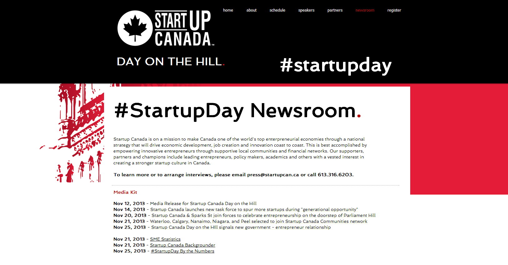

Startup Canada recently made history by gathering the largest contingent ever of Canadian entrepreneurs to meet on Parliament Hill with the nation's elected representatives to advance the national entrepreneurial agenda through a discussion of entrepreneurship and its important role in the Canadian economy. The Day on the Hill took place on 21 November 2013 at Parliament Hill, and was attended by more than seven hundred people. Seven federal cabinet ministers attended, alongside five MPs and over four hundred entrepreneurs.
As a [SPONSOR LEVEL] sponsor, [SPONSOR] can expect the following commitments from Startup Canada:
Startup Canada released several pre-event and post-event media packages for Day on the Hill, which are now posted on the Day on the Hill website. These materials were sent out to various media sources in order to maximize the promotion of the Day on the Hill. More information on these media packages are available below.
A vast number of media outlets published articles promoting the events at Startup Canada Day on the Hill. The event was covered by IT Business, Financial Post, iPolitics, MarketWired, ApnaHub, MarketWatch, Exchange Magazine, Centretown News, and PIVOT Magazine. These articles are provided below.


Throughout the day, attendees of the Day on the Hill tweeted about the event, using the hashtag #Startupday. #Startupday trended in Canada on the day of the event, and overall the hashtag generated a reach of 1 025 869 followers and an impact of 9 838 783 followers. During the days surrounding the event, @Startup_Can had 1 500 interactions with 493 users, 482 new Twitter followers, 721 mentions and 561 retweets. A summary of the tweets during the Day on the Hill is provided below.

Following the Day on the Hill, Startup Canada emailed a detailed overview and recap of the event to its extensive network of followers. This e-blast is provided below.

Startup Canada promoted the Day on the Hill extensively through its vast network of followers on Facebook, Twitter, LinkedIn, and Google+. Throughout the promotional period, Startup Canada was able to generate 7 623 pageviews, 26 shares, 126 likes, and 149 920 impressions. More detailed information is provided in the charts below.
At Startup Canada Day on the Hill, held last month in Ottawa, entrepreneurs and government leaders alike agreed a working relationship is needed to ensure Canada becomes and remains the best place in the world to start, operate, and grow a business. Beyond the event in Ottawa, Startup Canada Day on the Hill spurred a national conversation online, with the hashtag #startupday trending on Twitter across Canada. Startup Canada celebrated this successful meeting of entrepreneurs and government at Startup Canada Day on the Hill with a flag installation on Sparks Street in Ottawa. The flags were in place until November 29th.

Edward Kim
Data Coordination & Reporting Lead

John Henwood
Strategic Relations Assistant

Entrepreneurship Empowers Everyone TM/MD
© 2013 Startup Canada. All Rights Reserved.